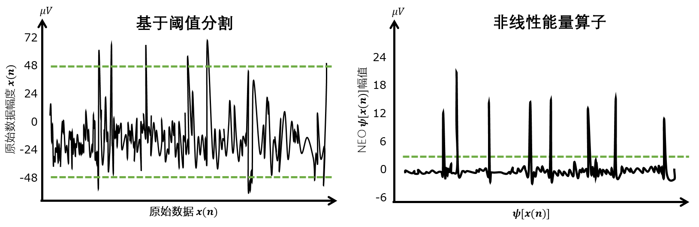
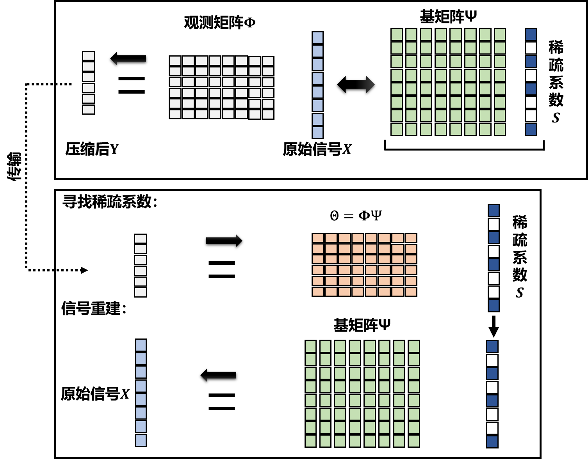
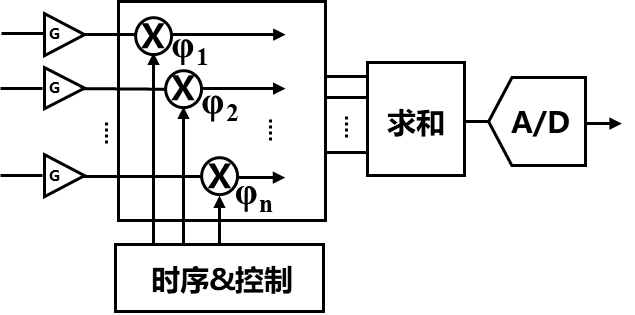
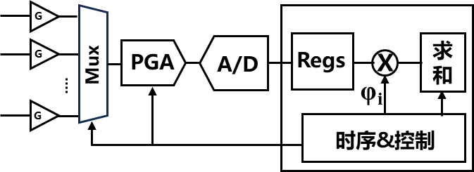
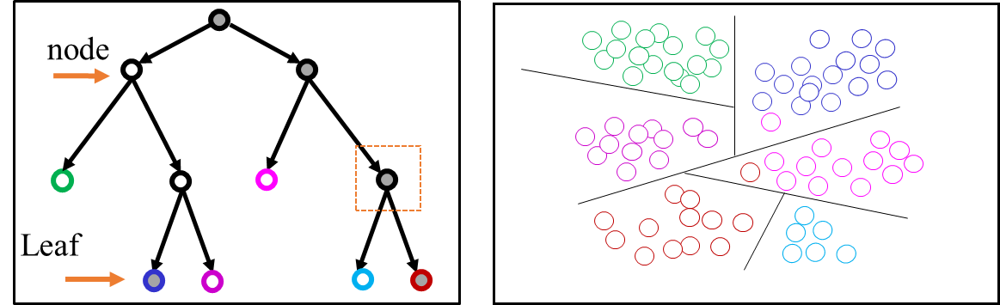
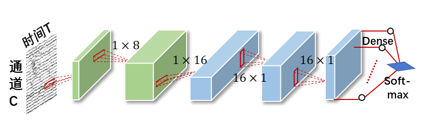

神经信号处理电路设计
针对不同的应用场景，可以对数字化的神经信号进行压缩，降低数据传输给系统带宽和功耗带来的压力，也可以在芯片上对神经信号进行直接处理，以进行及时的闭环神经调控[37]。本小节将分别简述神经信号压缩、特征提取以及分类常用算法以及相关电路设计。

图8-16 利用阈值和NEO算子进行尖峰检测
信号压缩
在侵入式脑机接口芯片上进行数据压缩是一种减少数据传输带来的系统功耗的有效解决方案[28]。对于动作电位记录，一种方法是在芯片上检测并仅传输尖峰信号，从而减少数据量。如图8-16，尖峰检测可以通过在硬件中实现预定义阈值的比较器来实现，这样可以以很小的功耗实现高达上千倍的压缩比。其中，最简单的片上尖峰监测方法如式（8-2）：
\(a \times \sqrt{\frac{\sum_{i = 1}^{n}{{(x}_{i} - \overline{x})}^{2}}{n - 1}}\) (8-2)
\(a \times median\left\{ \frac{|x|}{0.6745} \right\}\) (8-3)
式（8-2）中的阈值由多个采样点的标准差和一个倍数a决定，一般情况下可使用a = 4。另外，也可通过式（8-3）的方式估计一个噪声标准差来设定阈值。此外，尖峰检测还可以采用非线性能量算子（nonlinear energy operator，NEO)[38]，其表达式如式（8-4）所示：
\(\psi\left\lbrack x(n) \right\rbrack = x^{2}(n) - x(n + 1) \times x(n - 1)\) (8-4)
其中，x(n)是n时刻的采样点。当第一项的值较大且x(n-1)、x(n+1)较小时，\(\psi\left\lbrack x(n) \right\rbrack\)的值会相对较大，这个点可以被认为是一个尖峰。通过应用NEO算子后，可以进行一次阈值分割，以完成尖峰检测。通常情况下，所采用的阈值一般为\(\psi\left\lbrack x(n) \right\rbrack\)平均值的比例系数。
基于式（8-2）和（8-3）的尖峰检测在电路上实现简单，但是基于尖峰检测的压缩会丢失大部分原始波形。因此，在使用该方法时需要权衡数据压缩和信息丢失之间的平衡。

图8-17 利用压缩感知进行信号采样和重建的过程
压缩感知（compressive sensing, CS）理论是一种广泛用于神经信号压缩的方法。该理论利用信号的稀疏性，实现亚奈奎斯特采样和接近无损的信号重构[39]。大多数自然和人造信号X∈Rn均可被表示为一个稀疏基矩阵Ψ和稀疏系数s的乘积，即X = Ψs。压缩采样的过程则可用以下方程表示：
Y = ΦX (8-5)
观测矩阵Φ∈Rm×n是压缩感知中的测量矩阵，其中m < n。通过观测矩阵Φ对X进行采样，我们可以得到较低维度的测量值Y，这样就可以实现减少传输数据量的效果。图8-17展示了信号压缩和重建的完整过程。原始信号X表示为Ψ和s的乘积，即X= Ψs。采样过程由Y = ΦX表示。因此，可以得到Y = ΦΨs = Θs。Θ是一个m×n的矩阵。显然，由于所得的线性方程的数量大于未知数的数量，因此有无限多个s的解。从信号稀疏性出发，我们希望找到一个稀疏向量作为解。为了实现这一点，可以使用L1范数来获得稀疏向量s：
\(\widehat{s}\) = argmin||S′||1 (8-6)
在植入式芯片设计中，通常只考虑压缩采样过程，由外部计算设备完成信号的重建即可。为了保证数据能够被可靠地恢复，测量矩阵Φ需要满足有限等距性质（restricted isometry property, RIP）。满足该条件的矩阵可以是随机高斯矩阵、随机伯努利矩阵、哈达玛矩阵等。为了降低芯片实现的成本，可将矩阵中元素分配为0、±1、±(1/8)、±(2/8)、...、±(7/8)来近似伯努利矩阵[40, 41]。如图8-18所示，展示了在植入式芯片上实现压缩感知的电路结构图。主要目标是实现式（8-5）中的向量矩阵乘法运算，以实现信号的降维。在模拟实现中，多个通道的信号在模拟域进行采样和求和，最后将压缩后数据流转化为数字信号，在这一过程中，感知矩阵中的元素通过由时序和数字控制的采样或者增益控制实现。在数字实现中，通过对数值的移位或者可编程增益放大器的控制，实现采样矩阵。

(a)

(b)
图 8-18压缩感知的（a）模拟和（b）数字实现
除了压缩感知方法以外，还有主成分分析（principal component analysis，PCA）[42]等其他方法可进行数据压缩。然而，对于植入式芯片的片上数据压缩来说，这些方法的代价通常过高，难以适用。
特征提取
特征提取是脑机接口系统中的关键步骤之一，旨在从神经信号中提取有用的信息，并将其转化为可操作的命令或控制信号。通过在芯片上进行这些特征提取过程，可以降低信号传输和处理的延迟，提高系统的实时性和响应速度，这对于闭环神经调控等应用领域来说尤为关键。神经信号中的特征可以包括频率、时域、相位、振幅等方面的信息，根据应用或研究目标的不同，所选取的特征也有所不同。例如，上节所述尖峰信号在脑机接口的运动解码中是常用特征，相位锁定值（Phase Lock Value，PLV）可以评估两个信号之间的同步性，高频振荡（high frequency oscillations, HFO）特征则与帕金森和癫痫病具有相关性[43, 44]。表8-3列出了常见的神经信号特征，包括频率相关特征、相位相关特征以及时域特征。
能量谱是神经信号中最为常用的特征之一，可以用于分析不同频段的活动[45]。如LFP信号中的α波、β波、γ波段的能量谱被普遍认为和帕金森、癫痫等疾病具有相关性。能量谱可利用式（8-7）在离散时间域进行计算：
表8-3 脑机接口应用中常见特征
| 相位相关特征 | 相位锁定值 |
|---|---|
| 相位谐振耦合 | |
| 频率相关特征 | 高频振荡 |
| 跨频耦合 | |
| 能量谱 | |
| 其他 | 线长 |
\(SE = \frac{1}{N}\sum_{t = 1}^{N}y^{2}\) (8-7)
其中y为经过带通滤波后的神经信号。带通滤波器可采用有限冲激响应（finite impulse response, FIR）滤波器实现。数字FIR可简单看作对时域信号的卷积计算，如式所示：
\(y\lbrack N\rbrack = \sum_{i = 0}^{N - 1}{b_{i}x\lbrack i\rbrack}\) (8-8)
其中x[i]和y[i]分别为输入和输出信号，N-1为FIR滤波器的阶数，bi为滤波器系数。式(8-8)可以通过图8-19中展示的全并行或全串行的实现方法来实现。除此之外，还可以采用部分并行或部分串行的方式来在面积和速度之间进行折衷[46]。由于系数bi是固定值，因此乘法和累加计算存在多种优化方式。例如，可以将固定的系数值分解为移位操作和查找表等。
图 8-19 采用全并行和全串行的FIR滤波器实现
高频振荡（high frequency oscillations, HFO）是指在某个频率以上的谱能量。例如，高于200Hz的HFO和高于80Hz的HFO被分别认为和帕金森、癫痫的发生和发展过程有一定关系，是疾病诊断和治疗的潜在生物标记物。
线长（line-length，LL）特征是一种在癫痫检测中广泛使用的特征[47]，其计算如式 (8-8)。LL衡量了信号在时间上的快速变化程度。当信号存在高振幅、剧烈变化或高频振荡时LL值将会迅速增加。
\(LL = \frac{1}{N}\sum_{t = 1}^{N}{|x_{t} - x_{t - 1}|}\) (8-9)
线长特征计算简单，目前被很多用于进行癫痫控制的神经调控仪器所采用[48]。
相位锁定值（phase locking value, PLV）是常用于评估神经信号之间相位同步性的特征，在神经科学研究和脑疾病诊断中广泛使用[49]。PLV通过计算信号之间的相位差来评估相位同步性，可采用式（8-9）的方式计算。N为检测时间窗内数据采样点，\(\mathrm{\Delta}\varnothing_{i}\)为两个信号之间第i个样本的瞬时相位差。PLV的取值范围在0到1之间，其中0表示没有相位同步，1表示完全的相位同步。
\(PLV = \frac{1}{N}\sqrt{{(\sum_{i = 0}^{N - 1}{sin(\mathrm{\Delta}\varnothing_{i}))}}^{2} + {(\sum_{i = 0}^{N - 1}{cos(\mathrm{\Delta}\varnothing_{i}))}}^{2}}\) (8-10)
从时频分析中提取信号瞬时相位常用的方法是采用希尔伯特变换（Hilbert transformation）。图8-19所示的电路结构或其变形结构可以实现希尔伯特变换，从而获得输入信号x的解析信号\(x_{a}\)，其中包含了原始实值信号的幅度和相位信息。
\(x_{a} = Re(x) + jIm(x)\) (8-11)
相位计算可通过式(8-12)计算获得：
\(\varnothing = \frac{Im(x)}{Re(x)}\) (8-12)
两个信号之间的瞬时相位差\(\mathrm{\Delta}\varnothing\) = \(\varnothing_{1} - \varnothing_{2}\)。
除了PLV之外，相位谐振耦耦合（Phase-Amplitude Coupling）可用于描述不同频率带的振幅与相位之间的关联关系，其计算方式与PLV类似，其中At为调制幅度包络。
\(PAC = \frac{1}{N}\sqrt{{(\sum_{i = 0}^{N - 1}{A_{t}sin(\mathrm{\Delta}\varnothing_{i}))}}^{2} + {(\sum_{i = 0}^{N - 1}{cosA_{t}(\mathrm{\Delta}\varnothing_{i}))}}^{2}}\) (8-13)
在侵入式脑机接口芯片中，为了实现反正切函数、开方以及正余弦函数的计算，通常会采用坐标旋转数字计算机（CORDIC）进行近似计算，以降低硬件开销[50]。
特征分类
利用特征提取，可得到神经信号的特征向量，而对特征向量进行分类是判断脑疾病发作、解码人脑意图等工作的最后环节。对于侵入式脑机接口芯片而言，除了分类的准确率以外，还需要考虑功耗、面积以及实时性等问题[51]。
支持向量机（support vector machine, SVM）是一种常用的用于片上神经信号特征分类的方法[52, 53]。其数学公式如式（8-14）所示：
\(f(x) = \sum_{i = 1}^{N}{a_{i}K\left( v_{i},x \right) + b}\) (8-14)
其中，\(v_{i}\)和x分别表示支持向量和特征向量，K代表核函数，\(a_{i}\)和b是预先训练得到的参数。特征向量的类别由最终计算值f(x)的符号确定。图8-19展示了SVM分类器的概念和简化硬件实现框图。
(a) (b)
图 8-21支持向量机概念以及硬件实现
在图8-21（a）中，可以看到两个不同类别的支持向量构成了最大化两个类别之间间隔的超平面。对于线性不可分的数据点，核函数可以将其投影到更高的维度，使其变得可分。根据公式（8-14），实现支持向量以及参数的存储和核函数计算是片上完成SVM分类器的关键。图8-21（b）为简化的SVM硬件实现架构，采用存储器对参数和支持向量进行存储，利用状态机进行计算控制。同时，采用并行的核函数计算单元来执行\(a_{i}K\left( v_{i},x \right)\)的计算。与FIR滤波器实现类似，在具体应用中可根据实际需求，采用部分并行或者串行来增减核函数计算模块的数量。
在支持向量机的硬件实现中，核函数的计算至关重要。常用的核函数包括线性函数、多项式函数和径向基函数（radial basis function, RBF）[46, 54, 55]。它们的表达式分别如式（8-14）所示：
\[K\left( v_{i},x \right) = v_{i} \bullet x\]
\(k(vi,x) = {(\beta v_{i} \bullet x + \gamma)}^{M}\) （8-15）
\[k(vi,x) = exp( - \frac{{||v_{i} \bullet x||}^{2}}{2\sigma})\]
其中，\(v_{i}\)和\(x\)是输入向量。\(\beta\)是多项式函数的参数，\(\gamma\)是常数项，\(M\)是多项式的阶数，\(\sigma\)是RBF核函数的参数。线性函数或者多项式函数可能会牺牲一部分分类精度，但是所需的硬件资源和计算复杂度较低。RBF函数的计算涉及到复杂的平方、除法和幂运算，对于植入式芯片实现来说是相对复杂，为了简化RBF函数的计算，通常采用CORDIC进行迭代进行近似计算[56-58]。
除了支持向量机，斜决策树（oblique decision tree，ODT）也经常被应用于侵入式的脑机接口芯片中[59, 60]。图8-20（a）展示了一个六分类斜决策树的拓扑结构，由“内部节点”（Node）和“叶节点”（leaf）组成。内部节点通过将超平面和样本特征值进行比较，将样本分配到下一级的内部节点或者叶节点，这一过程不断重复，直到达到叶节点为止。叶节点是决策树的最终输出结果，它给出输入样本的最终分类标签。图8-22（b）为斜决策树二维投影为六个类别的示例。
在斜决策树中，内部节点中超平面和特征向量比较过程可由式（8-16）表示：
\(f = \sum_{i = 1}^{N}{a_{i}s_{i}} + b\) （8-16）
其中，N表示输入特征向量维度，\(s_{i}\)表示特征向量的第i个属性，\(a_{i}\)为对应的参数。与支持向量机类似，侵入式芯片仅关注决策树的推理过程，因此主要涉及每个节点的特征值与参数的计算，以及根据计算结果选择下一级节点的逻辑控制过程。决策树的电路实现相对支持向量机来说较为简单，主要涉及加法器、比较器的使用。在脑机接口中，为了进一步提高硬件使用效率和分类准确率，可以通过优化分类的流程或者集成决策树的方法通过将多个决策树组合起来进行分类，提高整体的分类性能[61]。

(a) (b)
图 8-22决策树概念示意图
相较于支持向量机和决策树等传统的机器学习方法，使用深度学习算法可以实现对复杂信号的特征提取和分析，已经被用在癫痫预测、语音解码等诸多领域[62-65]。深度学习算法包含了多种运算，如卷积、池化和激活函数等。相比支持向量机和决策树，深度学习算法的参数量和计算量都大大增加。然而，在侵入式芯片存储器大小受限的情况下，需要将神经网络模型压缩至数十至百kB以下[66]。为了降低算法和硬件实现的难度，很多工作首先对单个通道的数据进行一维卷积，然后再对多个通道的数据特征进行空间方向上的卷积。如图8-23所示，为采用上述方法进行神经信号处理的卷积神经网络示例[67]。通过这样的优化，神经网络的硬件实现变得和FIR滤波器类似，从而实现了在较低硬件开销下分类能力的提升。

图 8-23 采用卷积和脉冲神经网络进行神经信号的分类示例
除上述方法外，基于神经形态计算（neuromorphic computing）的特征提取和处理在脑机接口应用中也受到了广受关注[68-70]。这种方法受到大脑的启发，使用脉冲信号进行信息编码，并利用神经元-突触模型来实现信息的处理和传递。与传统计算方式相比，神经形态计算具有极高的能量效率[71]，同时由于其本身就是对大脑的模拟，所以其天然地适用于大脑的尖峰信息的处理[72]。例如，已有研究工作利用三层脉冲神经网络对运动皮层的脉冲信号进行解码，实现了猴子脑控玩电脑游戏，以及利用神经形态计算进行癫痫检测[73, 74]。